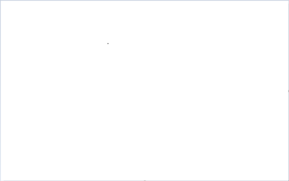
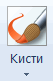
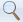

Учимся рисовать в Paint
Paint — это одна из самых простых программ для рисования на компьютере. В ней можно создать полноценный рисунок, а также обработать фотографию: уменьшить размер, обрезать, сделать надпись. Сейчас мы научимся работать с основными инструментами и цветами в этом приложении.
Чтобы открыть программу, нужно нажать на «Пуск» в нижней части экрана слева. В списке щелкнуть по пункту «Стандартные-Windows» и выбрать Paint.

Загрузится приложение. Выглядит оно примерно так:

Окно состоит из нескольких частей. Самая важная — белый прямоугольник посередине. Это и есть наш лист, то есть то место, где мы будем рисовать.
Следующая, не менее важная часть, — инструменты. Это то, чем мы будем рисовать.

Также нам понадобятся цвета. Они находятся рядом.
Цвета
Для того чтобы выбрать цвет, нужно всего лишь щелкнуть по нему левой кнопкой мышки. Кстати, обратите внимание на два квадратика.
Если Вы нажмете на какой-нибудь цвет, то он появится в первом (переднем) квадратике. Это означает, что он выбран, и им можно рисовать.
А задний квадратик — это тот цвет, которым Вы будете стирать нарисованное. По умолчанию он белый. Лучше его не менять.
Кстати, это далеко не вся палитра. Есть еще много других оттенков. Для добавления цветов нужно щелкнуть по пункту «Изменение цветов».
Инструменты
А сейчас самое интересное — рисование. Все инструменты находятся в верхней части приложения.
Начнем с Карандаша. Выглядит он вот так:
Рисует тонкой линией. Для этого выберите «Карандаш», кликнув по нему левой кнопкой мыши, укажите цвет. Затем наведите курсор на белое, нажмите на левую кнопку мыши и, не отпуская ее, двигайте мышкой.
Следующий популярный инструмент — Кисть. Выглядит он вот так:
Рисует более толстой линией, чем «Карандаш».
Чтобы изменить толщину и тип линии, нужно нажать на иконку со стрелочкой прямо под инструментом «Кисть».
Ластик — вытирает то, что нарисовали.
Заливка — заполняет цветом объединенную область.
Для того, чтобы это попробовать, нарисуйте круг кисточкой или карандашом. Щелкните левой кнопкой мыши по заливке и выберите другой цвет.
Наведите внутрь круга и щелкните левой кнопкой мыши один раз. Внутренняя часть круга заполнится.
Масштаб — увеличивает часть рисунка.
Для увеличения щелкните по инструменту «Масштаб» и нажмите на то место рисунка, которое хотите увеличить, левой кнопкой мышки. Для возврата обратно, то есть уменьшения, щелкните правой кнопкой мышки по увеличенной части. Если это не сработало, то снова выберите «Масштаб» и щелкните по рисунку левой кнопкой мышки.
И напоследок поговорим еще об одном инструменте, который, по сравнению с предыдущими, не так часто используется.
Пипетка
Нужна для того, чтобы определить цвет. Для этого наведите «Пипетку» на определенную часть рисунка и нажмите один раз левой кнопкой мышки. После чего посмотрите на установленный цвет. Он поменяется. При помощи «Пипетки» можно выбрать цвет в определенном месте (точке) рисунка.
Только что мы рассмотрели самые часто используемые инструменты программы Paint. Попробуйте нарисовать похожий рисунок, используя их.
Другие возможности приложения мы рассматриваем в следующих уроках.